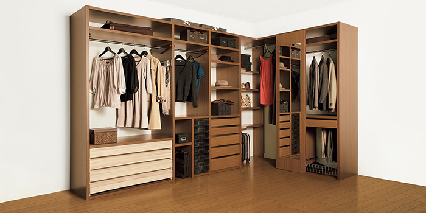
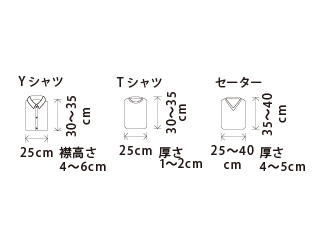
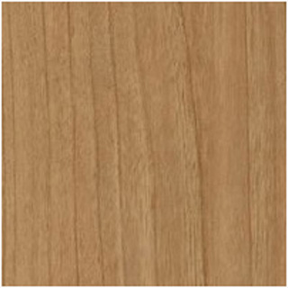

- TOP
- スタイルシェルフ
STYLE SHELF家族の成長に合わせ、
アレンジ自在な収納を
多彩なパーツを自由に組み合わせることで、収納を自在にアレンジできる──。それが、ce-fit（セフィット）シリーズの成長する収納「スタイルシェルフ」です。機能はもちろん、美しさ・品質・耐久性にもこだわり、永くつきあえるのもこの製品の魅力。こちらでは、アクシス株式会社が自信をもっておすすめするスタイルシェルフについてご案内します。
スタイルシェルフとは？
家族と歩調を合わせるように成長していく収納、それがスタイルシェルフ。多彩なパーツを自由に組み合わせれば、「百家族で百通り」の収納・スタイルシェルフができ上がります。しかもパーツの移動は手回しのドライバー1本でOK。しかも導入後、何年、何十年と経過しても、追加パーツの入手が容易。長くつきあえるのもスタイルシェルフの魅力です。
家がそうであるように、収納にも"いま"と"未来"があります。
大切な持ち物が「しまいやすく」「使いやすく」「たっぷり」収納できること。
「今日はどんな装いで出掛けよう」と楽しく選べるということ。
そして、私たちはそのうえに、ご家族の成長にあわせて
「自由に組み替えれる」という発想をプラスしたいと思います。
多彩なパーツが揃っているから、自分スタイルの収納の夢がかなう。
丁寧に作り上げた収納だから、インテリアの一部になれる。
"いま"も、何十年経った"未来のいま"も使いやすい収納、スタイルシェルフ。
スタイルシェルフの機能と特長
成長する収納
基本セットと多彩な追加パーツの組み合わせで、さまざまな収納スタイルに対応できること。まさに成長する収納こそスタイルシェルフの魅力です。
子ども部屋の場合
- 低学年の子どもの手が届く
位置に棚やパイプ。
お片付けの習慣を育みます。
- 中学生になったら、制服など
学校用品エリアと私服などの
エリアに分けて収納。
- 衣類やバッグなどアイテムに
応じて、オシャレを楽しむ、
選びやすいクローゼットに。
成長する収納のポイント
スタイルシェルフが“成長する収納”と呼ばれる理由は、どれほどパーツを追加、移動しても美しい佇まいを維持できるから。それを実現しているのが、独自開発の「システム穴」です。樹脂のネジを打ち込むことで、穴を破損や汚損から守ります。だからいつまでも美しく、丈夫。しかも、ご家庭のドライバーがあればパーツの付け外しも簡単に行えます。スタイルシェルフのオプションパーツはすべて同じ方式を採用しているので、組み替えもラクラクです。
使う人によって「使いやすい高さ」があります
スタイルシェルフの魅力はそのフレキシブルな機能性。誰もが使いやすい高さに調整でき、しかもパーツのレイアウトも自在に行えます。大人から子どもまで、便利に快適に使いこなせる賢い収納と言えるでしょう。
デザインする収納

自分スタイルで収納をデザインするオプションパーツ
- 可動ハンガーパイプ
- 可動ダブルハンガーパイプ
- シャツ棚
- インセット引き出し（大・中・小）
- インセット引き出し（仕切付き）
- パンツハンガー
- 連結機能ユニット
- コンテナトレイ
- 網かご
- ネクタイ掛け

- 仮掛けフック
- 桐和盆
- スライドシャツ棚
- コーナー棚セット
- 姿見ミラー
しまい方あれこれ ライフスタイルと持ち物に合わせて美しく実用的な収納に
-
吊るす
大人の衣服などを美しく吊すには、平均約2.5ｍのハンガーパイプが必要と言われます。スーツやジャケットが多い方、たたむのが苦手な方はスペースを多めに設けましょう。
-
たたむ
シャツやカットソーなどたたんで収納する衣類が多い場合は、棚や引き出しを通常より多めに。なお、引き出しの天地に合わせ、たたんだ衣類を整列して収納すれば取り出しやすくなります。

-
おく
立体的な形状をしたバッグや帽子は重ねず、見えやすいように置けば取り出しやすくなります。形が安定しない小物類は、網かごに入れるか収納ボックスに入れて引き出せるようにしましょう。
-
分けてしまう
シャツ、小物、ネクタイなどは専用のパーツを使うと格段に整理整頓がしやすくなります。また中が見えるコンテナトレイを利用するのも賢い収納術と言えます。
-
見せてしまう
コーナー棚などを上手に使いこなせば魅せる収納へのグレードアップも簡単。しかも心理的にモノの増えすぎも防いでくれて、ファッションを楽しむゆとりも生まれます。
収納物のサイズ目安（単位：cm）
- 
カラーバリエーション
- クリアホワイト
- ホワイトエルム
- コンフォートクリア
- 
- コンフォートミディアム
- コンフォートダーク
上質な収納
美しさとぬくもりを大切にした30ミリパネル
スタイルシェルフのこだわりは美しさ・品質・耐久性・安全性。30mmの厚みが上質さを感じさせる本体パネルは環境に配慮した木質資源を原料とし、VOC（揮発性有機化合物）の蒸散がきわめて少なく安全な水性塗料を何層にも塗り重ねた上質な仕上げを施しています。長く使用しても傷が付きにくく、当初の美観が保たれるのはそのためです。もちろん、シックハウス対策もしっかりしています。
ぴったりな収納
どんな住まいにもフィット。室内空間を上手に生かします。
商品バリエーション
3つの収納
- クローゼット内部専用
- I型
- L型
※L型を2つつなげて、コの字型に配置して、ご夫婦でエリア分けされる収納方法も人気です。
たてパネル（側板）をよこパネル（棚板）で連結する、パネルシステムの収納です
- たてパネル＋よこパネル＝基本セット
幅はミリ単位オーダー可能
側板に天板を連結するパネルタイプのシステム収納。横方向の連結数に制限はありません。
- 調整スパン対応範囲：230～975（mm）／本体幅：290（mm）～
※一部の収納パーツは幅寸法が固定です。
※棚板・ハンガーパイプ・引き出しは、ミリ単位でオーダーできます。
標準高さは2080mm
側板・仕切板の高さは、標準2,080mm。設置場所に合わせ32の倍数単位でオーダー可能です。
- 標準高さ：2,080（mm）／対応範囲：832～2,400（mm）
※勾配天井などの場合、高さ違いでの連結が可能です。
選べる奥行は2種類
スペースに合わせて2種類の奥行が選べます。
※特注不可。
※パーツや収納物が飛び出す場合があります。通路幅や建具位置をご確認ください。また姿見ミラー採用時はご注意ください。
衣類収納のバリエーション
クローゼットの中にセットしたり、ウォークインクローゼットとして活用できます。
※表示価格は希望小売価格です。消費税および施工費は含まれておりません。
カタログ
ce-fit（セフィット）のスタイルシェルフについて、商品カタログ各種はこちらからダウンロードいただけます。